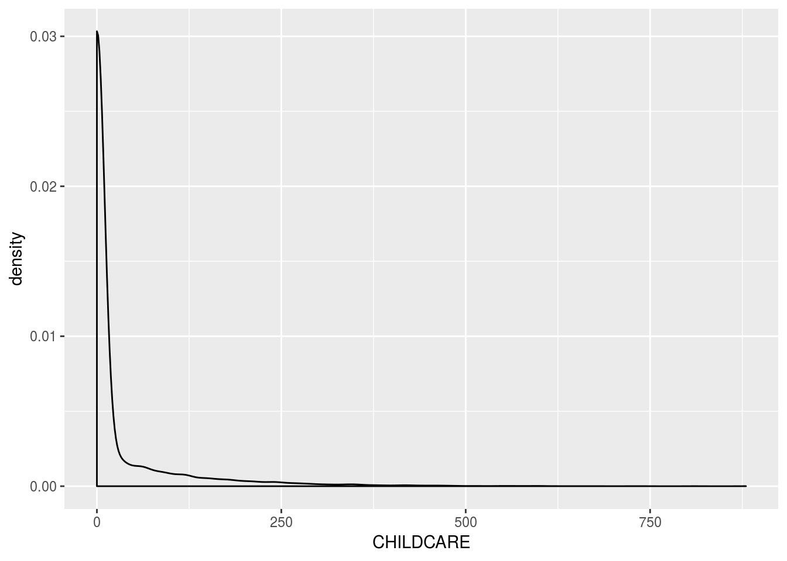
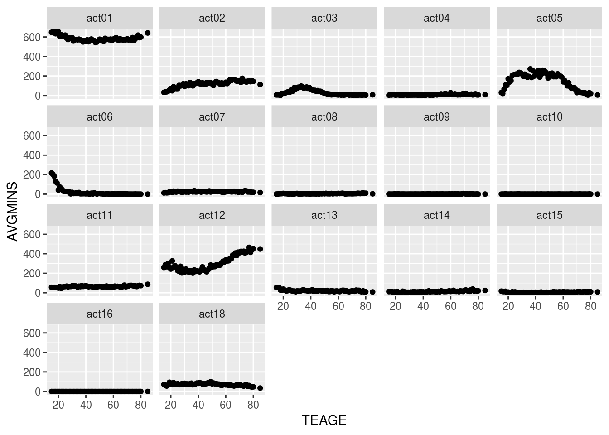
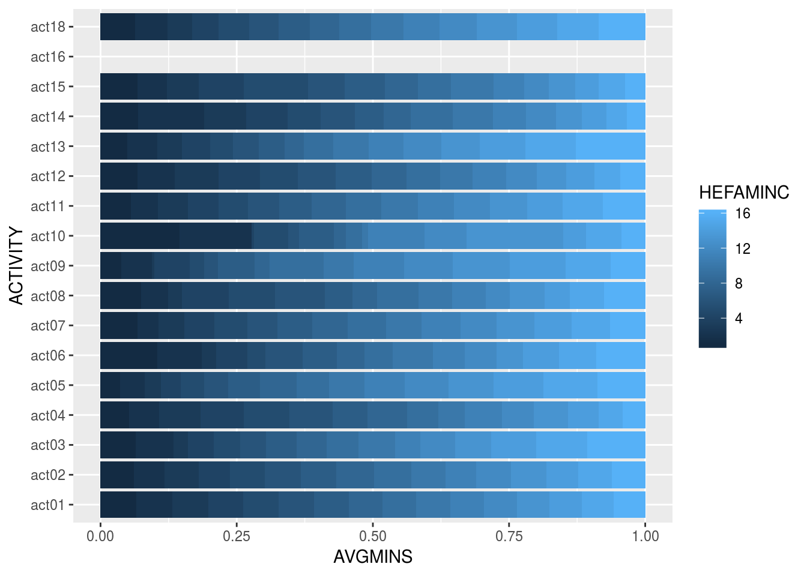

The Data
The American Time Use Survey (ATUS) is a time-use survey of Americans, which is sponsored by the Bureau of Labor Statistics (BLS) and conducted by the U.S. Census Bureau. Respondents of the survey are asked to keep a diary for one day carefully recording the amount of time they spend on various activities including working, leisure, childcare, and household activities. The survey has been conducted every year since 2003.
Included in the data are main demographic variables such as respondents’ age, sex, race, marital status, and education. The data also includes detailed income and employment information for each respondent. While there are some slight changes to the survey each year, the main questions asked stay the same. You can find the data dictionaries for each year on https://www.bls.gov/tus/dictionaries.htm
Accessing the Data
There are multiple ways to access the ATUS data; however, for this project, you’ll get the raw data directly from the source. The data for each year can be found at https://www.bls.gov/tus/#data. Once there, there is an option of downloading a multi-year file, which includes data for all of the years the survey has been conducted, but for the purposes of this project, let’s just look at the data for 2016. Under Data Files, click on American Time Use Survey--2016 Microdata files.
You will be brought to a new screen. Scroll down to the section 2016 Basic ATUS Data Files. Under this section, you’ll want to click to download the following two files: ATUS 2016 Activity summary file (zip) and ATUS-CPS 2016 file (zip).
ATUS 2016 Activity summary file (zip)contains information about the total time each ATUS respondent spent doing each activity listed in the survey. The activity data includes information such as activity codes, activity start and stop times, and locations.ATUS-CPS 2016 file (zip)contains information about each household member of all individuals selected to participate in the ATUS.
Once they’ve been downloaded, you’ll need to unzip the files. Once unzipped, you will see the dataset in a number of different file formats including .sas, .sps, and .dat files. We’ll be working with the .dat files.
Loading the Data into R
Use the first approach explained above to download and access the ATUS data for 2016. Download the CPS and Activity Summary files in a folder and unzip them and within each folder upload the files ending in .dat to data/raw_data filder on RStudio.cloud. To load the data in, run the code in the atus-data code chunk to create an object called atus.all.
Importing data
atus.cps <- read.delim('final_project_data/atuscps_2016.dat', sep=",")
atus.sum <- read.delim('final_project_data/atussum_2016.dat', sep=",")
atus.all <- atus.sum %>%
left_join(atus.cps %>% filter(TULINENO==1), by = c("TUCASEID"))Exploratory Analysis of Child Care Data
atus.all <- atus.all %>%
mutate(CHILDCARE = t030101 + t030102 + t030103 + t030104 + t030105 + t030106 + t030108 + t030109 + t030110 + t030111 + t030112)ggplot(atus.all)+
geom_density(aes(CHILDCARE))
childcare <- atus.all %>%
group_by(TESEX) %>%
summarize(avg = mean(CHILDCARE))
childcare## # A tibble: 2 x 2
## TESEX avg
## <int> <dbl>
## 1 1 19.0
## 2 2 33.1## replace -1 in the variable TRDPFTPT with NA.
atus.all <- atus.all %>%
mutate(TRDPFTPT=na_if(TRDPFTPT,-1))## add your exploratory analysis code hereRegression Analysis
## add your regression analysis code here
regression <- lm(TRCHILDNUM ~ HEFAMINC,
data=atus.all)
summary(regression)##
## Call:
## lm(formula = TRCHILDNUM ~ HEFAMINC, data = atus.all)
##
## Residuals:
## Min 1Q Median 3Q Max
## -0.9681 -0.8149 -0.5466 0.5300 8.2618
##
## Coefficients:
## Estimate Std. Error t value Pr(>|t|)
## (Intercept) 0.355030 0.030152 11.78 <2e-16 ***
## HEFAMINC 0.038319 0.002598 14.75 <2e-16 ***
## ---
## Signif. codes: 0 '***' 0.001 '**' 0.01 '*' 0.05 '.' 0.1 ' ' 1
##
## Residual standard error: 1.099 on 10491 degrees of freedom
## Multiple R-squared: 0.02031, Adjusted R-squared: 0.02022
## F-statistic: 217.5 on 1 and 10491 DF, p-value: < 2.2e-16Exploratory Analysis of Age and Activities
atus.wide <- atus.all %>%
mutate(act01 = rowSums(atus.all[,grep("t01", names(atus.all))]),
act02 = rowSums(atus.all[,grep("t02", names(atus.all))]),
act03 = rowSums(atus.all[,grep("t03", names(atus.all))]),
act04 = rowSums(atus.all[,grep("t04", names(atus.all))]),
act05 = rowSums(atus.all[,grep("t05", names(atus.all))]),
act06 = rowSums(atus.all[,grep("t06", names(atus.all))]),
act07 = rowSums(atus.all[,grep("t07", names(atus.all))]),
act08 = rowSums(atus.all[,grep("t08", names(atus.all))]),
act09 = rowSums(atus.all[,grep("t09", names(atus.all))]),
act10 = rowSums(atus.all[,grep("t10", names(atus.all))]),
act11 = rowSums(atus.all[,grep("t11", names(atus.all))]),
act12 = rowSums(atus.all[,grep("t12", names(atus.all))]),
act13 = rowSums(atus.all[,grep("t13", names(atus.all))]),
act14 = rowSums(atus.all[,grep("t14", names(atus.all))]),
act15 = rowSums(atus.all[,grep("t16", names(atus.all))]),
act16 = rowSums(atus.all[,grep("t17", names(atus.all))]),
act18 = rowSums(atus.all[,grep("t18", names(atus.all))]) ) %>%
select(TUCASEID, TEAGE, HEFAMINC, starts_with("act"))library(tidyr)
atus.long <- atus.wide %>%
gather(key = ACTIVITY, value = MINS, act01:act18) atus.long %>%
group_by(ACTIVITY, TEAGE) %>%
summarise(AVGMINS = mean(MINS)) %>%
ggplot(aes(x=TEAGE, y= AVGMINS)) +
geom_point() +
facet_wrap(~ACTIVITY)
Exploratory Analysis of Income and Activities
atus.long %>%
group_by(ACTIVITY, HEFAMINC) %>%
summarise(AVGMINS = mean(MINS)) %>%
ggplot( aes(x = ACTIVITY, y = AVGMINS, fill = HEFAMINC)) +
geom_bar(position = "fill",stat = "identity") +
coord_flip()## Warning: Removed 16 rows containing missing values (geom_bar).
## add the rest of the code here## save the plot above
ggsave("activity-income.png")## Saving 7 x 5 in image## Warning: Removed 16 rows containing missing values (geom_bar).